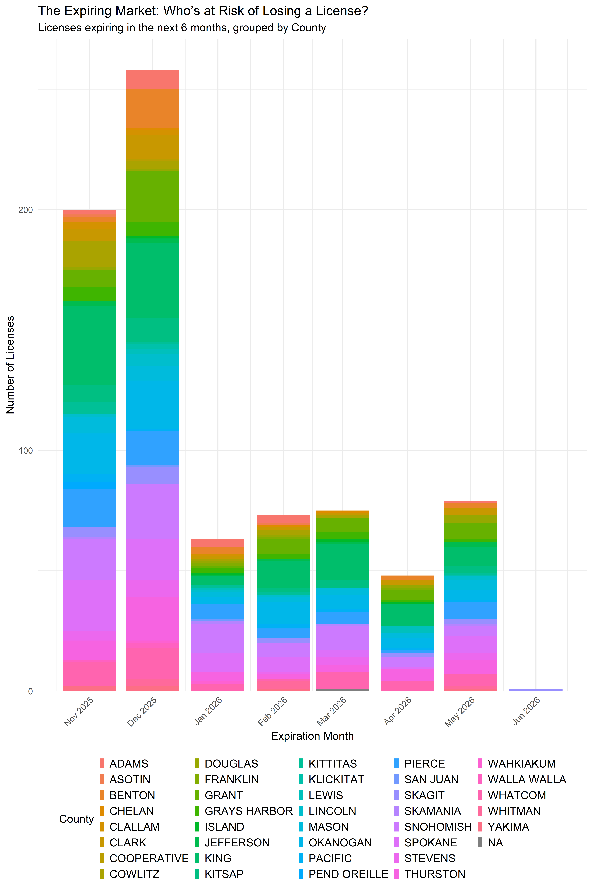

The Expiring Market: Who’s at Risk of Losing a License in Washington?
A Prelude to Business Activity in Washington Cannabis Industry
CCRS
Expiration
Licensees
The Bottom Line Up Front
License expiration is a quiet but powerful structural force. When thousands of licenses cluster within a narrow time window, the entire cannabis ecosystem feels the weight—from growers to retailers, labs, and regulators.
By mapping expiration risk statewide, TECL provides clarity where the market previously lacked visibility. This empowers businesses, strengthens the supply chain, and supports a more resilient Washington cannabis economy.
Overview
License expiration is an under-analyzed but critical signal in Washington’s cannabis ecosystem. Every license—producer, processor, or retailer—must renew on a predictable annual cycle, and failure to renew leads to immediate inactivity, product immobility, and permanent loss of market position.
Why License Expiration Analysis Matters
License expiration is not simply an administrative milestone — it drives several critical dynamics across Washington’s cannabis ecosystem.
Regulatory continuity
- Lapses create compliance gaps
- Untaggable product disrupts seed-to-sale traceability
- Operators risk falling out of reporting compliance
Supply chain stability
- Retailers with expiring licenses may interrupt high-volume customer pipelines
- Producers facing renewal deadlines often scale back activity
- Distributors may experience routing or manifest delays
Market churn
Expiration spikes are often followed by:
- Mergers & acquisitions
- Location closures
- Ownership changes
- Reduced operating hours
- Inventory liquidations
The closer an entire sector gets to mass renewal events, the greater the strain on licensing authorities and business operations.
What the Data Shows: A Six-Month Expiration Wave
The stacked bar chart below highlights a significant renewal surge across Washington’s cannabis market.
End-of-year concentration
- 197 licenses expiring in November 2025
- 242 licenses expiring in December 2025
That means 439 licenses will require renewal within a 61-day window.
No regulatory system — LCB, WSDA, local governments, or labs — functions without stress when thousands of entities require action simultaneously.
Early 2026 continuation
The months that follow show smaller but meaningful renewal waves:
| Month | Expiring Licenses |
|---|---|
| Jan 2026 | 67 |
| Feb 2026 | 75 |
| Mar 2026 | 80 |
| Apr 2026 | 57 |
| May 2026 | 73 |
| Jun 2026 | 1 |
Renewals spike sharply at year-end before flattening in the spring.
Where Are At-Risk Licensees Located?
The dataset contains 171 County–month combinations of expiring licenses — from major metros to small rural agricultural communities.
Examples include:
- King – 104
- Snohomish – 82
- Spokane – 67
- Okanogan – 59
- Pierce – 56
- Grant – 53
- Whatcom – 42
- Benton – 26
When viewed at the city level, several small towns show high concentrations relative to population, signaling that communities anchored by cultivation and processing may experience simultaneous operational risk.
The At-Risk Category: Who’s Most Vulnerable?
We identified 792 “at risk” licensees in the “0–3 months” or “3–6 months” expiration groups.
These include:
- Individual sole proprietors
- Small rural farms
- Brands with only one licensed location
- Older labs and processors
- Retailers in dense metro corridors
Why this matters
Licensees in the at-risk category face the highest operational vulnerability:
- Missed renewal deadlines
- Product in transit risking quarantine
- Retail shelves experiencing regional shortages
- Operators using expiration as a natural exit point
Market Implications
1. End-of-Year Congestion
439 licenses expiring in Nov–Dec 2025 will saturate LCB’s renewal queue.
Slow processing times may delay approvals into Q1 2026.
2. Retail Disruption
Many of the state’s highest-volume retailers identified in the transportation bottleneck analysis operate in cities with large expiration clusters. As such, this aligns expiry risk with distribution risk.
3. Increased M&A Activity
Expiration waves historically precede:
- License transfers
- Corporate restructuring
- Strategic acquisitions
- Capital repositioning
4. Equity & Rural Impact
Cannabis-dependent rural communities such as Okanogan, Oroville, Royal City, and Centralia experience disproportionate effects.
License expiration in these areas directly impacts:
- Local employment
- Agricultural supply chains
- Municipal tax revenue
NA refers to other license holders such as state-authorized analytical labs that must renew in March 2026
License expiration is an under-analyzed but critical signal in Washington’s cannabis ecosystem. Every license—producer, processor, or retailer—must renew on a predictable annual cycle, and failure to renew leads to immediate inactivity, product immobility, and permanent loss of market position.
Using CCRS-aligned licensee data, TECL analyzed more than 1,842 active cannabis license records and identified 792 licensees whose licenses expire within the next six months. The findings highlight emerging regional vulnerabilities, volume surges, and market-level risks that operators and policymakers cannot ignore.
Takeaways for Operators, Regulators & Stakeholders
TipFor Operators
- Confirm renewal dates well ahead of deadlines
- Align renewal timing with product cycles
- Prepare compliance packages early
- Anticipate potential LCB delays in Nov–Dec
NoteFor Regulators
- Prepare for high renewal load during Q4 2025
- Consider auto-renew or streamlined renewal guidance
- Provide early warning communications to at-risk licensees
ImportantFor Retailers
- Identify whether suppliers appear in the “0–3 month” category
- Strategize procurement ahead of expiration windows
- Hold buffer inventory where applicable
WarningFor Policy Analysts
- Track whether expirations correlate with business exits
- Monitor rural cluster expiration risk
- Evaluate local tax revenue and employment impacts
- Inform legislative discussions on renewal reform
Join the Discussion
Your insights help drive better transparency and smarter policy in Washington’s cannabis industry.